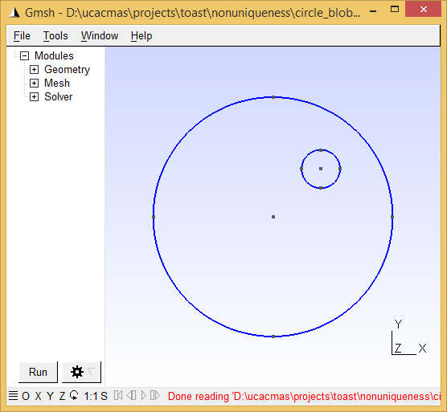
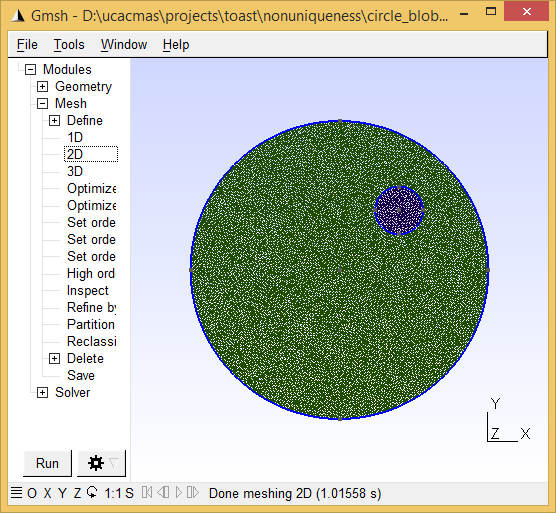
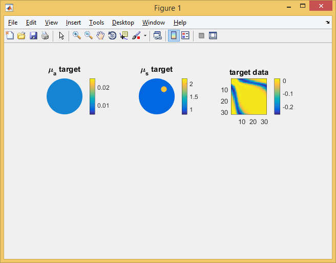
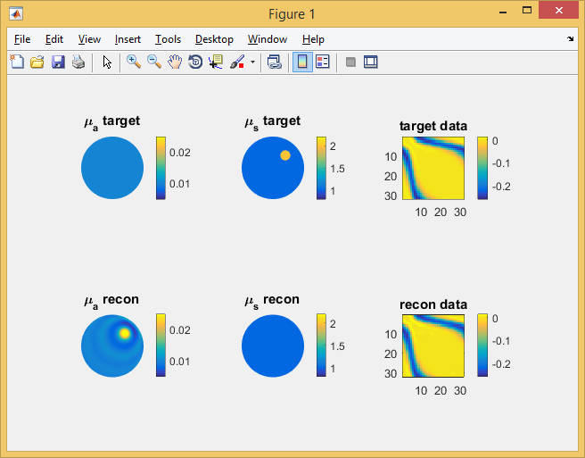

| Image Reconstruction in Diffuse Optical Tomography |
Toast toolbox tutorial: Demonstrating non-uniquenessThis example demonstrates a non-uniqueness condition in DOT. Transillumination amplitude data from a steady-state measurement at a single wavelength are not sufficient for reconstructing both absorption and scattering parameter distributions. In this example, this is demonstrated by generating data from a model with homogeneous absorption, while scattering consists of a homogeneous background with a circular inclusion of increased scattering. Using these data, an absorption-only reconstruction is performed under the assumption that scattering is constant. The reconstruction succeeds in finding an absorption distribution that generates data matching the scatter-perturbed target data. The Matlab script for this example can be downloaded here. Step 1: Create the target meshFor this example, we create a 2D circular mesh with a circular inclusion. You can create this mesh yourself with gmsh (see Meshing tutorial 1 and Meshing tutorial 2 for details). The mesh should be circular with radius 25 and centre in the origin. It should contain a small off-centre inclusion, and separate surface definitions for the background and inclusion. Call the mesh circle_blob.msh so that the script will recognise it. Alternatively, you can download a ready-made mesh here.

Step 2: Load the meshWe start the script by loading the mesh and identifying the elements forming the inclusion:
mesh = toastMesh('circle_blob.msh','gmsh');
ne = mesh.ElementCount; nv = mesh.NodeCount; regidx = mesh.Region; regno = unique(regidx); blobel = find(regidx == regno(2)); % assuming that the second surface marks the inclusion Step 3: Define source and measurement geometryWe define 32 source and detector locations along the mesh circumference, and use toastMesh methods Qvec and Mvec to extract the corresponding operators.
rad = 25; % mesh radius [mm]
nopt = 32; for i=1:nopt phiq = (i-1)/32*2*pi; qpos(i,:) = rad*[cos(phiq), sin(phiq)]; phim = (i-0.5)/32*2*pi; mpos(i,:) = rad*[cos(phim), sin(phim)]; end mesh.SetQM(qpos,mpos); qvec = real(mesh.Qvec('Neumann','Gaussian',2)); mvec = real(mesh.Mvec('Gaussian',2,refind)); Step 4: Define the target parameter distributionWe want a piecewise constant target parameter distribution, so the target parameters are assigned in an element basis:
refind = 1.4; % refractive index
c0 = 0.3; % speed of light in vacuum [mm/ps] cm = c0/refind; % speed of light in the medium [mm/ps] mua_bkg = 0.01; % background absorption [1/mm] mus_bkg = 1; % background scattering [1/mm]; ref = ones(ne,1)*refind; mua = ones(ne,1)*mua_bkg; mus = ones(ne,1)*mus_bkg; mus(blobel) = mus_bkg*2; % Display the target distributions figure('position',[0,0,640,420]); subplot(2,3,1); mesh.Display(mua, 'range',[0.005,0.025]); axis off; title('\mu_a target'); subplot(2,3,2); mesh.Display(mus, 'range',[0.8,2.2]); axis off; title('\mu_s target'); Step 5: Generate target dataUse the FEM solver to generate surface CW amplitude data for the model defined above. Also solve the homogeneous problem to allow display of perturbation data:
% compute perturbed target model
smat = dotSysmat(mesh, mua, mus, ref, 'EL'); data = log(mvec' * (smat\qvec)); % for reference, also solve the homogeneous problem mus = ones(ne,1)*mus_bkg; smat = dotSysmat(mesh, mua, mus, ref, 'EL'); data_homog = log(mvec' * (smat\qvec)); % display sinogram of target data perturbations due to inclusion subplot(2,3,3); imagesc(data-data_homog, [-0.26,0.015]); axis equal tight; colorbar title('target data'); Note the 'EL' flag in the system matrix computation. This signals to Toast that the parameter vectors are supplied on an element-wise basis (default is node basis). Step 6: Setting up the inverse solverFor the reconstruction, we start from the correct background parameters. However, the reconstruction will (wrongly) assume that the scattering distribution is homogeneous, and only update the absorption distribution. To initialise the inverse solver, we reset the parameters to their background values, and compute the corresponding FEM solution. Note that for the inverse problem, we assume piecewise linear parameter distributions, and therefore define the parameters on a nodal basis.
mua = ones(nv,1)*mua_bkg;
mus = ones(nv,1)*mus_bkg; ref = ones(nv,1)*refind; smat = dotSysmat(mesh, mua, mus, ref); proj = reshape(log(mvec' * (smat\qvec)), [], 1); sd = ones(size(proj)); data = reshape(data, [], 1); subplot(2,3,4); mesh.Display(mua, 'range',[0.005,0.025]); axis off; title('\mu_a recon'); subplot(2,3,5); mesh.Display(mus, 'range',[0.8,2.2]); axis off; title('\mu_s recon'); subplot(2,3,6); imagesc(reshape(proj,nopt,nopt)-data_homog, [-0.26,0.015]); axis equal tight; colorbar title('recon data'); Next, we set up an inverse solver basis as a regular 32x32 grid, and map the intial estimate of the solution vector (the log of the absorption distribution) into that basis.
grd = [32,32];
basis = toastBasis(mesh, grd); bmua = basis.Map('M->B', mua); bcmua = bmua*cm; scmua = basis.Map('B->S', bcmua); x = scmua; logx = log(x); slen = length(x); We set up a regularizer instance and compute the initial value of the objective function:
regul = toastRegul('TV', basis, logx, 1e-4, 'Beta', 0.01);
err0 = toastObjective(proj, data, sd, regul, logx); err = err0; errp = inf; itr = 1; step = 1.0; fprintf('Iteration %d, objective %f\n', 0, err); Step 7: The inverse solver loopFinally, we add the loop for the iterative minimisation of the objective function. Note that this uses a local callback function for the evaluation of the line search. Therefore, Matlab requires that the main body of the code is wrapped into a function as well:
function nonuniqueness

% ------------------------- % code so far % ------------------------- % inverse solver loop itrmax = 100; % CG iteration limit tolCG = 1e-6; % convergence criterion while (itr <= itrmax) && (err > tolCG*err0) && (errp-err > tolCG) errp = err; r = -toastGradient(mesh, basis, qvec, mvec, mua, mus, ref, 0, ... data, sd, 'method', 'cg', 'tolerance', 1e-12); r = r(1:slen); % drop mus gradient r = r .* x; % parameter scaling r = r - regul.Gradient(logx); % CG search direction update if itr > 1 delta_old = delta_new; delta_mid = r' * s; end s = r; if itr == 1 d = s; delta_new = r' * d; else delta_new = r' * s; beta = (delta_new - delta_mid) / delta_old; if mod(itr, 20) == 0 || beta <= 0 d = s; else d = s + d*beta; end end % Line search along update direction step = toastLineSearch(logx, d, step, err, @objective); logx = logx + d*step; % update solution estimate mua = basis.Map('S->M',exp(logx)/cm); subplot(2,3,4); mesh.Display(mua, 'range',[0.005,0.025]); axis off; title('\mu_a recon'); proj = reshape(log(mvec' * (dotSysmat(mesh, mua, mus, ref)\qvec)), [], 1); subplot(2,3,6); imagesc(reshape(proj,nopt,nopt)-data_homog, [-0.26,0.015]); axis equal tight; colorbar title('recon data'); err = toastObjective(proj, data, sd, regul, logx); fprintf('Iteration %d, objective %f\n', itr, err); itr = itr+1; drawnow end function p = objective(logx) mua_ = basis.Map('S->M',exp(logx))/cm; proj_ = reshape(log(mvec' * (dotSysmat(mesh, mua_, mus, ref)\qvec)), [], 1); p = toastObjective(proj_, data, sd, regul, logx); end end The image above shows the result of the absorption reconstruction after 100 CG steps. It produces an absorption feature in approximately the position of the actual scattering object, and oscillatory rings around it. The boundary data generated by this absorption distribution match those of the target scattering distribution (right column), with an objective function of 0.0067 from the initial value of 8.26 of the homogeneous starting distribution. Further experiments
|